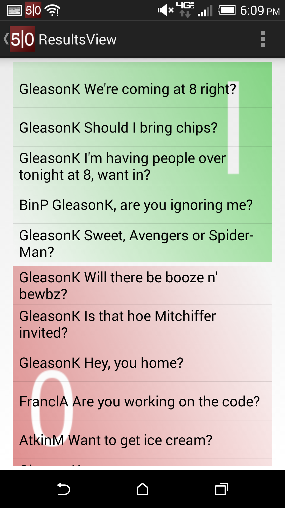
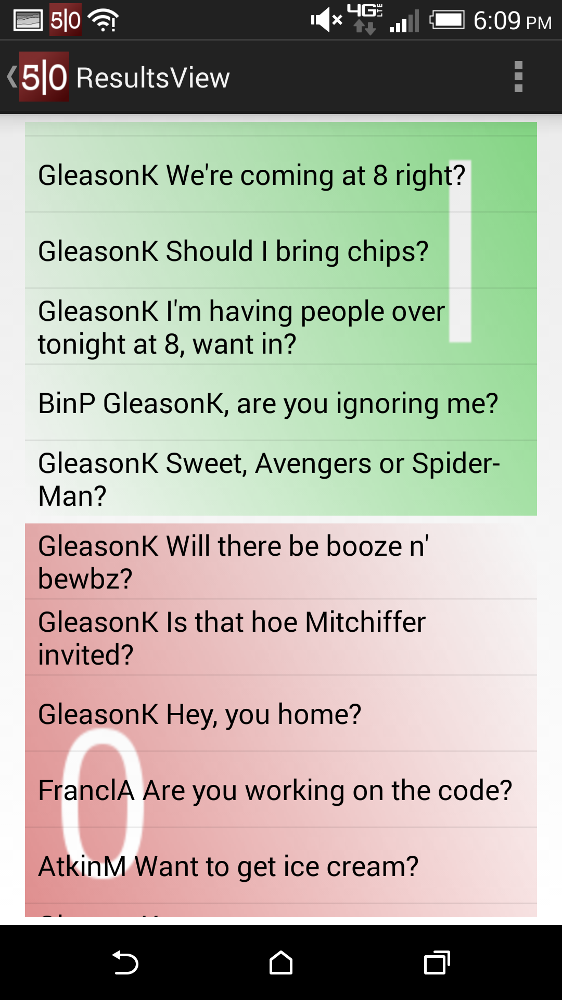

Design - v0.1
Required Parts
- Notification Icons - about (25px X 25px), will have text next to them.
- Fifty Yes icon
- Fifty No icon
- View in fifty icon
- Phone App icons - Sizes differ
- Main 5|O icon
- View notifications icon (currently square with # of icons. Can keep that but pick colors)
- View results icon (same deal as notifications)
- Send 5|O button
- Buddy list group icon ideas (Maybe just circle with first letter of group name in it to be simple. (R) for roommates etc.)
- Home screen - keep it simple.
- Navigation - Way to navigate from home to notifications. Dream here, can be a swipe-slide like snapchat or a button that sends you to notification screen.
- Notification - Way to show notification count on home screen. Currently done with square and number. Keep it geometric, can be a custom notification icon with and a small circle pops up with a number in it like iPhone.
- Results - Currently in the home screen, the blue square is for results the red is notifications. The sample results screen should only hold names of people who said yes or no, list can be scrollable or in columns.
- Buddy List - How easiest way to select friends. All option to lead to friend list, but focus on groupings for ease.
- Send Settings - Simple settings for sending like [ ]Anonymous etc.
- View Results - Need a way to view results with one of (yes | I | 1) on the right and (no | O | 0) on the left, looking natural.
- Main screen - keep it simple. I have a simple three split mock up. All we really need is a way to get to: 1. Ask a question 2. View questions asked 3. View results of questions
Screenshots

 
